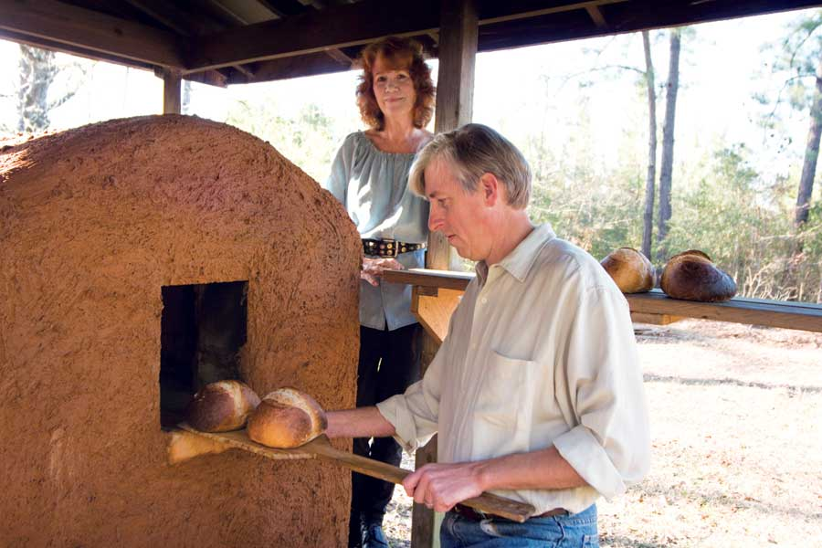

When my husband lost his job a few years ago, we knew it was time to downsize and get serious about self-sufficiency. So we moved to the country, built a small cabin and began gardening. We built an outdoor, wood-burning clay oven and learned how to bake old-world sourdough bread. This home based business turned into a modest income for us when we began baking bread in the clay oven for friends, family and our community market. With our reduced expenses and simple lifestyle, our little home based bread business now provides a good amount of the income we need.
The most sustainable and self-reliant way to bake bread is the traditional way, using a wood-fired brick or clay oven. It doesn’t require the use of non-renewable energy sources - just a few chunks of wood. This type of outdoor oven allows the loaves to bake with three forms of heat: radiant heat from the clay, convection from the movement of steam, and conduction from the brick hearth. The result is superior bread, with a moist crumb and thin, crisp crust.
For us to build a clay oven ourselves, we needed a plan that was affordable. We eventually found the perfect resource, the book Build Your Own Earth Oven by Kiko Denzer. In the book, Denzer describes how to locate and prepare clay, how to build your own clay oven, and how to design an oven that is artistic and highly functional.
We constructed the oven out of cinder block, clay, sand and hay. The hearth was made using firebrick supported on a bed of sand and dirt. The entire cost for the oven was about $100. We were able to build it with no extra help, but it would be fun to construct one as a group or family project. Making our oven was a wonderful learning experience, and we gained a valuable tool for homesteading that promotes simplicity and self-reliance. Mixing the clay with our bare feet was a blast!
We have been baking most of our sourdough bread in this oven, once or twice a week, for more than three years now. The clay oven accommodates up to eight loaves at the same time, and can actually handle two loads with only one firing. Furthermore, the oven holds the heat up to 10 hours after baking the bread, even in winter, so it’s efficient to use for cooking other foods, too.
We have produced an instructional DVD on the art of sourdough bread baking. The DVD and articles with practical information on voluntary simplicity are available through our website.
|
 L. KEVIN & DONNA PHILIPPE-JOHNSON Kevin and Donna market the sourdough bread they bake in their clay oven. |
|
|